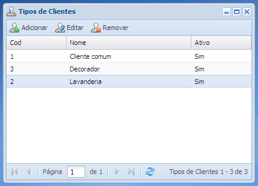

Tela de cadastro de tipos de clientes
Essa é a tela de cadastro de tipos de clientes, nela é possível adicionar novos tipos de clientes ainda não cadastrados no sistema, que serão utilizados em diversos outros cadastros do sistema.
